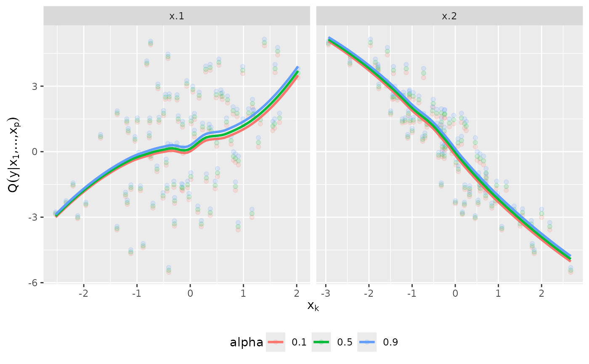

Predict conditional mean and quantiles from a D-vine regression model
predict.vinereg.RdPredict conditional mean and quantiles from a D-vine regression model
# S3 method for vinereg predict(object, newdata, alpha = 0.5, uscale = FALSE, ...) # S3 method for vinereg fitted(object, alpha = 0.5, ...)
Arguments
| object | an object of class |
|---|---|
| newdata | matrix of covariate values for which to predict the quantile. |
| alpha | vector of quantile levels; |
| uscale | if |
| ... | unused. |
Value
A data.frame of quantiles where each column corresponds to one
value of alpha.
See also
Examples
# simulate data x <- matrix(rnorm(300), 100, 3) y <- x %*% c(1, -1, 2) dat <- data.frame(y = y, x = x, z = as.factor(rbinom(100, 3, 0.5))) # fit vine regression model (fit <- vinereg(y ~ ., dat))#> D-vine regression model: y | x.3, x.2, x.1, z.2, z.1, z.3 #> nobs = 100, edf = 43.81, cll = -60.7, caic = 209.02, cbic = 323.16# inspect model summary(fit)#> var edf cll caic cbic p_value #> 1 y 5.813883 -207.3047835 426.23733 441.38349 NA #> 2 x.3 2.000000 50.5419043 -97.08381 -91.87347 1.121837e-22 #> 3 x.2 4.000000 26.8645501 -45.72910 -35.30842 5.996891e-11 #> 4 x.1 5.000000 67.5159601 -125.03192 -112.00607 2.033654e-27 #> 5 z.2 7.000000 0.8844183 12.23116 30.46735 9.715210e-01 #> 6 z.1 10.000000 0.3096025 19.38080 45.43250 9.999817e-01 #> 7 z.3 10.000000 0.4916187 19.01676 45.06846 9.998407e-01plot_effects(fit)#>#> Warning: pseudoinverse used at -0.005#> Warning: neighborhood radius 1.005#> Warning: reciprocal condition number 0#> Warning: There are other near singularities as well. 1.01#> Warning: pseudoinverse used at -0.005#> Warning: neighborhood radius 1.005#> Warning: reciprocal condition number 0#> Warning: There are other near singularities as well. 1.01#> Warning: pseudoinverse used at -0.005#> Warning: neighborhood radius 1.005#> Warning: reciprocal condition number 0#> Warning: There are other near singularities as well. 1.01#> Warning: pseudoinverse used at -0.005#> Warning: neighborhood radius 1.005#> Warning: reciprocal condition number 0#> Warning: There are other near singularities as well. 1.01#> Warning: pseudoinverse used at -0.005#> Warning: neighborhood radius 1.005#> Warning: reciprocal condition number 0#> Warning: There are other near singularities as well. 1.01#> Warning: pseudoinverse used at -0.005#> Warning: neighborhood radius 1.005#> Warning: reciprocal condition number 0#> Warning: There are other near singularities as well. 1.01#> Warning: at -0.005#> Warning: radius 2.5e-05#> Warning: all data on boundary of neighborhood. make span bigger#> Warning: pseudoinverse used at -0.005#> Warning: neighborhood radius 0.005#> Warning: reciprocal condition number 1#> Warning: There are other near singularities as well. 1.01#> Warning: zero-width neighborhood. make span bigger#> Warning: Computation failed in `stat_smooth()`: #> NA/NaN/Inf in foreign function call (arg 5)# model predictions mu_hat <- predict(fit, newdata = dat, alpha = NA) # mean med_hat <- predict(fit, newdata = dat, alpha = 0.5) # median pred <- predict(fit, newdata = dat, alpha = c(NA, 0.5)) # both # observed vs predicted plot(cbind(y, mu_hat))## fixed variable order (no selection) fit <- vinereg(y ~ ., dat, order = c("x.3", "x.1", "x.2", "z.1")) fit#> D-vine regression model: y | x.3, x.1, x.2, z.1 #> nobs = 100, edf = 22.81, cll = -54.94, caic = 155.51, cbic = 214.94